-
 

Aktualności - Wrzesień 2022
lek. dent. Aleksandra Markowska - nowe możliwości
Do naszego zespołu dołączyła lek. dent. Aleksandra Markowska. Wraz z nią otworzyły się nowe możliwości dla naszych najmłodszych pacjentów. Jako jedna z nielicznych wykonuje zabiegi frenotomii wędzidełka języka u noworodków oraz niemowląt współpracując przy tym m.in. z neurologopedami, czy osteopatami. Zabieg ten eliminuje wady mogące mieć wpływ na rozwój mowy u dzieci. Stale zgłębia zagadnienia dotyczące miofrenuloplastyki, także u dorosłych. Absolwentka kierunku lekarsko-dentystycznego na Uniwersytecie Medycznym w Łodzi. W codziennej pracy skupia się na leczeniu zachowawczym oraz periodontologii.Organizatorka licznych konferencji i szkoleń z zakresu stomatologii. Dba o stałe podnoszenie kwalifikacji i rozwój w kierunku stomatologii zachowawczej, protetyki oraz chirurgii stomatologicznej poprzez uczestnictwo w licznych kursach. Nastawiona na kompleksowe leczenie pacjenta oraz jego przeprowadzanie w spokojnej i bezstresowej atmosferze. Dr Ola Markowska przyjmuje:
w poniedziałki w godz. 8:00 - 13:00 Zapraszamy najmłodszych pacjentów do naszego gabinetu! Można rezerwować wizyty poprzez stronę internetową:
https://app.felgdent.com/extcal/921371937854 Lub dzwoniąc na nr naszej recepcji, tel. +48 884757737
Aktualności - Czerwiec 2022
The Art of Tomorrow - kongres Kol-Dental
Dr Tomasz Machan gościł jako wykładowca na kongresie w Sopocie 11.-11.06.22 ze swoim nowatorskim wykładem: "Lenistwo i skapstwo czy na pewno zawsze są to cechy negatywne?"Ciekawa forma warsztatów w otwartej przestrzeni pokazowego gabinetu pozwalała na uczestnictwo szerokiej publiczności.
M Studio partnerem Dr Smile
Staliśmy się gabinetem partnerskim firmy DR SMILE, który oferuje dyskretną korektę wad zgryzu w formie przezroczystych nakładek ortodontycznych.To do nas pacjenci są kierowani na skan 3D, konsultacje, założenie attachmentów i stripping. Serdecznie zapraszamy na Saską Kępę :)
Aktualności - Maj 2022
Kurs Krawiectwo Stomatologiczne
Moi drodzy, tak jak wspominałem w rozmowach z wieloma z Was, idziemy dalej ze szkoleniami. Już 4-5 czerwca zapraszam Was na dwa dni "pełnego zanurzenia" w tematyce tkanek miękkich w stomatologii. Czy to szkolenie jest dla chirurgów? Oczywiście, że też, gdyż zazwyczaj wymiana doświadczeń, nawet wśród specjalistów owocuje wzrostem profesjonalnym. Głównie jednak, dedykuje to szkolenie stomatologom "ogólnym", młodym i mniej młodym, którzy dostrzegają konieczność zrozumienia "jak to się zagoi", i "jak mogę modulować to gojenie tak by i mi, i pacjentowi, w życiu było łatwiej, szybciej i taniej". Bardzo przystępne techniki: - jak zachować po-ekstrakcyjny wyrostek , - jak wydłużyć koronę kliniczna pojedynczą lub w całej grupie, - jak pobierać tkankę łączną do przeszczepów skomplikowanych i prostych, - jak otwierać i zamykać płaty w endodoncji chirurgicznej, czy wreszcie, - jak dobrze i łatwo wykonać dojście do kiretażu otwartego itd.. Słowem, wszystko to, co jest "chlebem powszednim" wszechstronnego stomatologa, który umie dokonać poprawnej diagnozy, wykonać większość prostych zabiegów, czy odesłać do specjalisty dobrze wiedząc czego od niego wymagać. Będzie też oczywiście chirurgia na żywo, tak byście mogli sami zobaczyć jak to w praktyce wygląda. Zapraszam was serdecznie do Krakowa. Będziemy się świetnie bawić! Do zobaczenia w Krakowiedr Tomasz Machan
Aktualności - Kwiecień 2022
"Szlifowanie BOPT"
Zapraszam na kolejną edycję mojego autorskiego kursu "Szlifowanie BOPT" czyli bezschodkowe, poddziąsłowe protetyczne przygotowanie filarów. Biology Oriented Prostodontic Treatment, to technika mająca na celu pełne wykorzystanie feruli protetycznej, opierając się na konceptach modulacji gojenia tkanek miękkich, oraz z połączenia „stożkowego” pomiędzy filarem opracowanym bezschodkowo a koroną protetyczną. Szczególnie wskazana jest w przypadkach potrzeby poszerzenia obręczy lub modyfikacji pozycji CEJ. Na tym szkoleniu opowiem wam o wszystkich wskazaniach i przeciwwskazaniach, szlifowaniu według filozofii BOPT, modulacji gojenia, jak robić odbudowy tymczasowe natychmiastowe „przy fotelu”, jak rozmawiać z technikiem, jak cementować prace, czyli wszystko co jest wam potrzebne do wykonania tych technik „od zaraz”. Będzie więcej praktyki niż teorii, wiec przygotujcie się na wyczerpujący, ale produktywny czas. Do zobaczenia w Krakowiedr Tomasz Machan Dostępne daty szkolenia to: 7 lub 8 maja 2022 r.
Hotel Puro Kazimierz przy ul. Halickiej 14A w Krakowie.
Cena: 2400 pln
Szczegóły: https://www.dlugosz.pl/
Aktualności - Marzec 2022
Master Level: UPDATE
W miniony weekend 4-5 marca odbyła się w Uniejowie kolejna konferencja dla Absolwentów (choć nie tylko) Master Level: UPDATE.Jednym z wykładowców był dr Tomasz Machan ze swoim wykładem pt: "Jajowate przęsła – prosta technika codziennej chirurgii, która odmienia efekt protetyczny". Wśród uczestników Master Level jest dr Veranika Kulik.
Aktualności - Luty 2022
Zespół M Studio się rozrasta
Miło nam poinformować, że w lutym do naszego zespołu lekarzy dołączyła dr Veranika Kulik. Zaopiekuje się naszymi pacjentami wymagającymi leczenia zachowawczego, endodoncji, drobnych zabiegów chirurgicznych, protetyki lub konsultacji. Dr Kulik przyjmuje w M Studio w:- środę w godz. 15:00 - 20:00
- czwartek w godz. 15:00 - 20:00
Rejestrację wizyt można dokonać:
- dzwoniąc do recepcji: tel.+48 884757737
- korzystając z naszej strony: https://app.felgdent.com/extcal/921371937854 Zapraszamy!
Protetyka szlifowanie bezstopniowe -
BOPT DOKTORA TOMASZA MACHANA
Zapraszamy na jednodniowy autorski kurs dr Tomasza Machana “Protetyka – szlifowanie bezschodkowe BOPT”.Szkolenie ma na celu omówienie i przećwiczenie techniki BOPT – czyli szlifowania bezschodkowego. Poczas szkolenia postaramy się rozwiać wszelkie wątpliwości często pojawiające się w dyskusjach na temat techniki BOPT, tak aby mogli Państwo w pełni wykorzystać zalety kliniczne tej metody.
Część praktyczna szkolenia odbędzie się na specjalnie przygotowanych modelach protetycznych z symulacją tkanek miękkich. Każdy uczestnik otrzyma po szkoleniu dwa elementy: model i zestaw podstawowych wierteł. Do dyspozycji każdego będą: mikromotor oraz kątnica przyspieszająca, materiały izolacyjne i jednorazowe, kompozyty oraz wszystkie inne materiały niezbędne do wykonania tej techniki podczas ćwiczeń (w tym wiertła i gumki).